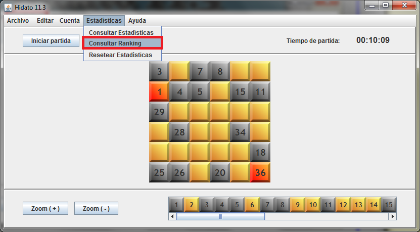
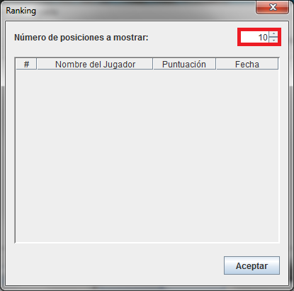

Seleccione el menú 'Estadísticas':

Seleccione 'Consultar Ránking':

Aparecerá la siguiente ventana:

Aquí aparecen las partidas con mayor puntuación. Usando el campo marcado en rojo se pueden cambiar el número de posiciones del ranking mostradas.